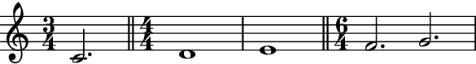
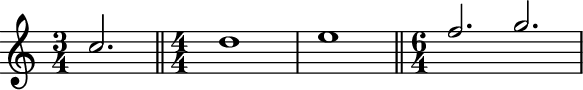
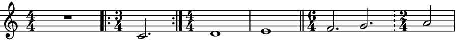

Score.add_double_bar_lines_before_time_signatures¶
- Score.add_double_bar_lines_before_time_signatures(*, to_each_voice: bool = False) → None[source]¶
Adds double bar lines to all components of
abjad.Scorebefore every time signature changes. Note that Auxjad adds this function as an extension method toabjad.Score(see usage below).- Basic usage:
>>> staff = abjad.Staff( ... r"\time 3/4 c'2. \time 4/4 d'1 e'1 \time 6/4 f'2. g'2." ... ) >>> score = abjad.Score([staff]) >>> abjad.show(score)
>>> score.add_double_bar_lines_before_time_signatures() >>> abjad.show(score)

- Multiple staves:
Works with multiple staves:
>>> staff_1 = abjad.Staff( ... r"\time 3/4 c''2. \time 4/4 d''1 e''1 " ... "\time 6/4 f''2. g''2." ... ) >>> staff_2 = abjad.Staff( ... r"\time 3/4 c'2. \time 4/4 d'1 e'1 \time 6/4 f'2. g'2." ... ) >>> score = abjad.Score([staff_1, staff_2]) >>> score.add_double_bar_lines_before_time_signatures() >>> abjad.show(score)
Each stave will receive their own double bar lines, which can be useful when part extracting:
>>> abjad.show(staff_1)
>>> abjad.show(staff_2)
to_each_voiceWhen multiple voices are present in a staff, double bar lines will be added to the last voice only:
>>> voice_1 = abjad.Voice( ... r"\time 3/4 c''2. \time 4/4 d''1 e''1 " ... "\time 6/4 f''2. g''2." ... ) >>> voice_2 = abjad.Voice( ... r"\time 3/4 c'2. \time 4/4 d'1 e'1 \time 6/4 f'2. g'2." ... ) >>> staff = abjad.Staff([voice_1, voice_2], simultaneous=True) >>> abjad.attach(abjad.LilyPondLiteral(r'\voiceOne'), voice_1) >>> abjad.attach(abjad.LilyPondLiteral(r'\voiceTwo'), voice_2) >>> score = auxjad.Score([staff]) >>> score.add_double_bar_lines_before_time_signatures() >>> abjad.show(score)
>>> abjad.show(voice_1)
>>> abjad.show(voice_2)

Setting
to_each_voicetoTruewill add a bar line to each voice in a staff:>>> voice_1 = abjad.Voice( ... r"\time 3/4 c''2. \time 4/4 d''1 e''1 " ... "\time 6/4 f''2. g''2." ... ) >>> voice_2 = abjad.Voice( ... r"\time 3/4 c'2. \time 4/4 d'1 e'1 \time 6/4 f'2. g'2." ... ) >>> staff = abjad.Staff([voice_1, voice_2], simultaneous=True) >>> abjad.attach(abjad.LilyPondLiteral(r'\voiceOne'), voice_1) >>> abjad.attach(abjad.LilyPondLiteral(r'\voiceTwo'), voice_2) >>> score = auxjad.Score([staff]) >>> score.add_double_bar_lines_before_time_signatures( ... to_each_voice=True, ... ) >>> abjad.show(voice_1)
>>> abjad.show(voice_2)
- Multi-measure rests:
This method can handle multi-measure rests.
>>> staff = abjad.Staff( ... r"\time 3/4 R1 * 3/4 " ... r"\time 4/4 R1 * 2 " ... r"\time 6/4 R1 * 6/4 " ... r"\time 4/4 R1" ... ) >>> score = abjad.Score([staff]) >>> score.add_double_bar_lines_before_time_signatures() >>> abjad.show(score)
- Input with bar lines:
If the score already contains non-standard bar lines at points where a time signature changes, only those of types
"|"and""will be replaced, keeping all others as they were.>>> staff = abjad.Staff( ... r"R1 " ... r"\time 3/4 c'2. " ... r"\time 4/4 d'1 " ... r"e'1 " ... r"\time 6/4 f'2. g'2. " ... r"\time 2/4 a'2" ... ) >>> abjad.attach(abjad.BarLine('.|:'), staff[0]) >>> abjad.attach(abjad.BarLine(':|.'), staff[1]) >>> abjad.attach(abjad.BarLine('|'), staff[3]) >>> abjad.attach(abjad.BarLine('!'), staff[5]) >>> score = abjad.Score([staff]) >>> score.add_double_bar_lines_before_time_signatures() >>> abjad.show(score)
